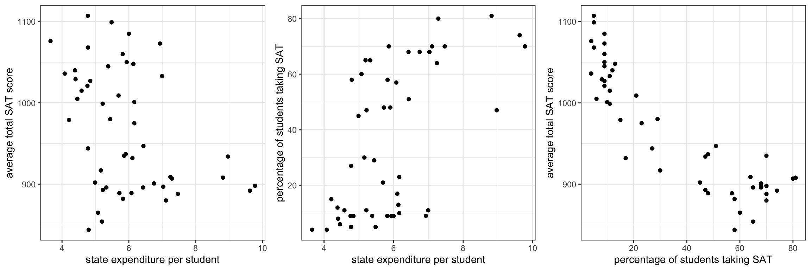
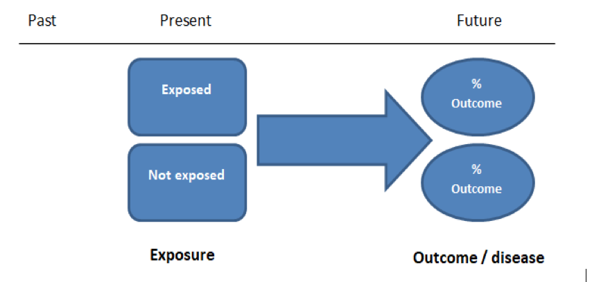
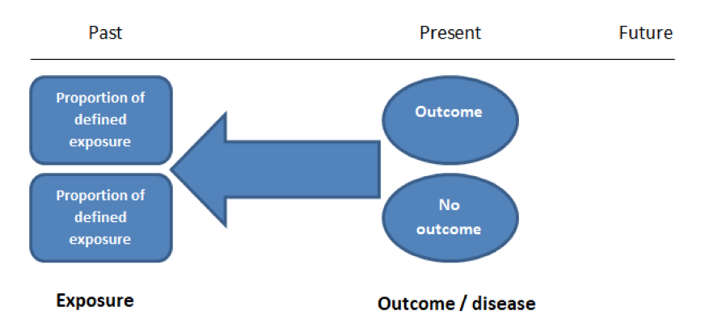
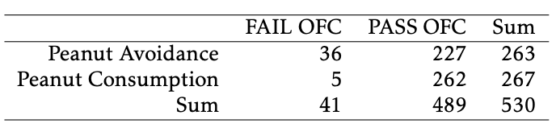
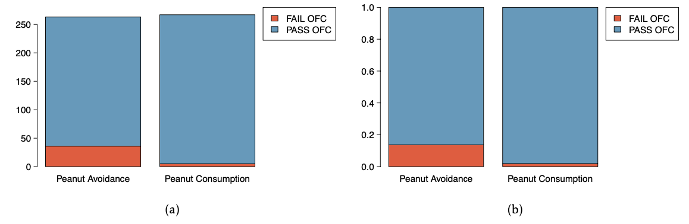

flowchart TD A(unobserved condition) --- B(study condition) & C(outcome)
Study designs
What is a study?
A study is an effort to collect data in order to answer one or more research questions.
Ultimately, you’re in this class to learn how to answer questions (or evaluate the answers of others) in a sound way, so we will start with the basics of study design because:
studies must be well-matched to research questions to provide good answers
how data are obtained is just as important as how the resulting data are analyzed
no analysis, no matter how sophisticated will rescue a poorly conceived study
[Terminology] A study unit is the smallest object or entity that is measured in a study; also called experimental unit or observational unit.
Two types of studies
Observational studies collect data from an existing situation without intervention.
Aim is to detect associations and patterns
Can’t be used to establish causal links (more on this later)
Experiments collect data from a situation in which one or more interventions have been introduced by the investigator.
- Aim is to draw conclusions about the effect of one or more interventions
- Stronger form of scientific evidence than an observational study
Often, observational studies are used to explore/generate hypotheses prior to designing an experiment.
Comparing study types
Either type of study can be used to address a question.
| Question | Observational study | Experiment |
|---|---|---|
| Are diet and mood related? | Conduct surveys on diet, lifestyle, and affect | Recruit study participants, assign diets, measure affect |
| Is vaping safer than smoking? | Follow groups of vapers and smokers over time and record health outcomes | Among a group of smokers, assign some to switch to vaping; compare health outcomes over time |
| Do insecticide applications affect soil microbes? | Analyze soil samples from farms using different insecticides | [Your turn] |
In each example, which approach would you choose if you were the researcher? What are the pros and cons?
Why does intervention matter?
In an experiment, the researcher intentionally intervenes in a way that they expect to change outcomes.
- intervention confers a degree of control over study conditions
In an observational study, there is no (intentional) intervention.
- without intervention the researcher has no control over study conditions
Control over conditions allows a researcher to study causal effects resulting from interventions. This can best be understood in terms of a phenomenon known as confounding.
Confounding
Confounding occurs when two conditions cannot be differentiated.
This happens when either:
[omission] one study condition is not measured
a researcher finds that dog owners live longer, but failed to measure how much exercise each subject gets
is it the dog, or the daily walks?
[conflation] two study conditions are always observed simultaneously
a researcher finds that people on diet 1 tend to be overweight, but all study participants on diet 1 are from the U.S., and all study participants on diet 2 are from Canada
is it the diet, or the country?
Consequences of confounding
Usually, researchers are concerned with confounding by omission.
When an unobserved condition is associated with both the observed condition and the outcome one may observe:
an artificial association between the study condition and outcome
a distorted association between the study condition and outcome
This is very common in observational studies, because you can’t measure every study condition.
Example of confounding
[left] Higher state educational expenditure looks associated with lower SAT scores
[center] But increased expenditure looks associated with more test takers
[right] And higher percentages of test takers are associated with lower averages
If you ignored how many students take the test, you’d conclude that expenditure is counterproductive
Antidote: randomization
The ability to control study conditions allows researchers to randomize interventions among study subjects:
- allocated in such a way that all subjects are equally likely to receive any intervention
Randomization eliminates confounding by isolating the condition(s) of interest:
interventions are independent of extraneous conditions ⟹ no association possible
if outcomes differ systematically according to the intervention, you can be certain that it is not an artifact
flowchart TD A(unobserved condition) x-.-x B(study condition) A --- C(outcome)
Extraneous conditions may still be associated with outcomes and add noise — well-thought-out experiments find ways to reduce this.
Practical consequences
The ability to randomize interventions in experiments means:
observed associations are independent of extraneous factors
results can support causal inferences
The absence of randomization in observational studies means:
confounding is always possible
results may be misleading
Usually, observational studies are considered weaker forms of scientific evidence than experiments, with some caveats:
a large volume of independent observational studies pointing to the same conclusions may be more convincing than a few narrow experiments
observational studies may provide better evidence under real world conditions than available experimental data
Common study designs
Studies can be designed to investigate outcomes in a variety of ways, regardless of whether study conditions include intervention. Many study designs originate in clinical medicine — the following are among the most common.
In prospective studies participants are recruited before developing a condition

In retrospective studies participants are recruited after developing a condition

These terms usually refer to observational studies; experiments are typically prospective in nature, since one recruits participants before administering an intervention.
Example study
Imagine following this year’s Cal Poly freshmen (a “cohort”) and comparing four-year graduation (outcome) rates between those that participated in a new orientation activity and those that didn’t. This would be:
- prospective if an observational study
- an experiment if students were assigned to participate or not
Can you change the example so that it’s a retrospective study?
Experimental designs
A treatment is an experimental intervention; the design of an experiment refers to how treatments are allocated to study units.
The most basic design is:
[balanced] each treatment is replicated an equal number of times
[randomized] treatments are allocated completely at random to study units
[no crossover] each study unit receives exactly one treatment
We’ll call this a completely randomized design. It’s the only kind of experimental design we’re going to consider in STAT218.
There are many other designs that we won’t discuss (but see STAT313); these are all about improving experimental efficiency by controlling extraneous variation.
Blinding
The terms single-blind and double-blind refer to experiments with human subjects, typically in clinical studies.
In a single-blind study, participants are unaware of which treatment they receive.
- Example: in a case-control study, one group of patients is given a new medicine and the other is given a saline solution administered under identical conditions
- Idea: controls for placebo effect
In a double-blind study, both participants and investigators are unaware of which treatments are administered.
- Example: same as above, but now the person administering the doses is unaware of which are medicine and which are saline
- Idea: controls for unconscious influence on outcome by researchers (e.g., attend more carefully and compassionately to patients receiving medicine out of concern for side-effects)
Data collection
We will discuss data collection in more depth later, but the way that study units are obtained, independently of the type of study or design, determines the breadth of conclusions supported by the results, depending on whether study units chosen are representative of a larger collection.
The gold standard is a simple random sample of units selected from a larger collection:
every unit in the larger collection has an equal chance of being selected
easier said than done — failure to obtain a random sample is one of the most common study flaws
For now we will set the issue of sampling aside.
Considerations in creating a study
The research question should be motivated by science, not statistics.
You may have to work within limitations:
The design that best aligns with the question may not be possible or practical.
An experiment might give the strongest evidence but not be feasible or ethical.
A plan should be in place for all of the following:
how to obtain/recruit study units/participants
how many to obtain/recruit and how to ensure that target is met
protocol for allocating treatment
collecting data and measuring outcomes
contingencies for dropout/failure to ensure the study yields results
data handling and data analysis
how results will be used
Study design in STAT218
In STAT218 you are expected to be fluent with study design concepts, but of course won’t actually carry out an end-to-end study.
[L1] design a data collection scheme based on simple random sampling or simple experimental designs
[L2] distinguish between observational studies and experiments and understand the limitations (practical and consequential) of each
Case study: LEAP
Learning early about peanut allergy (LEAP) study:
640 infants in UK with eczema, egg allergy, or both enrolled; 530 passed a skin test showing no peanut allergy
each infant randomly assigned to peanut consumption and peanut avoidance groups
peanut consumption: fed 6g peanut protein daily until 5 years old
peanut avoidance: no peanut consumption until 5 years old
at 5 years old, oral food challenge (OFC) allergy test administered
PASS: no allergy detected
FAIL: allergy detected
What kind of study is this? Experiment or observational study? Retrospective, prospective, or neither?
Case study: LEAP


Does peanut avoidance/consumption appear associated with developing an allergy?
If so, does the study provide evidence that early exposure likely reduces the chance of developing an allergy by 5 years of age?
What calculation could you perform to summarize the difference between study groups?

STAT218